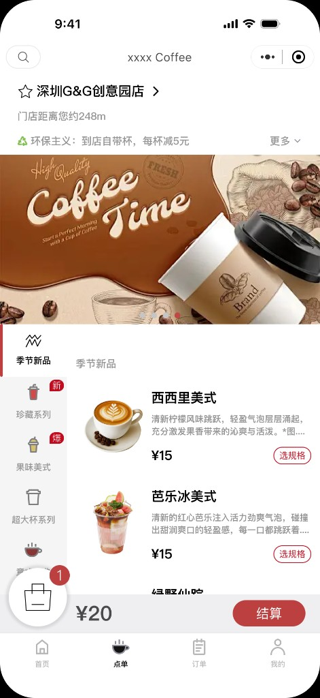
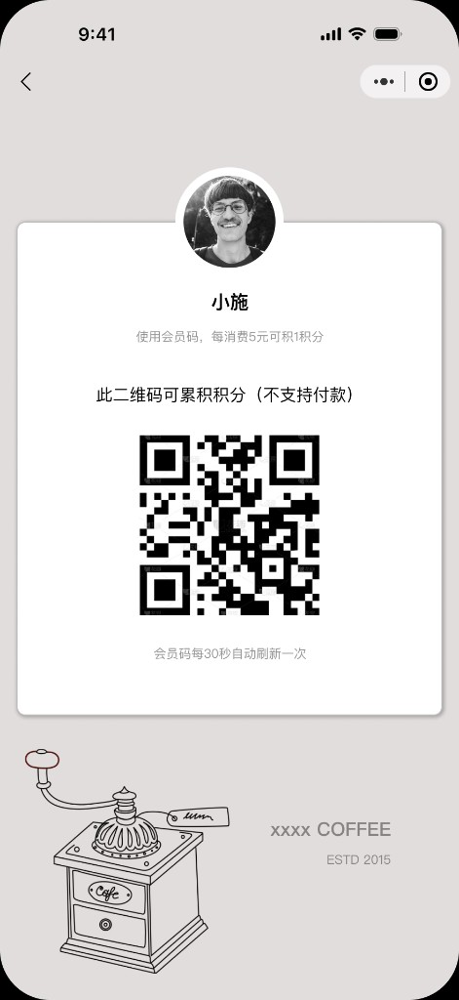
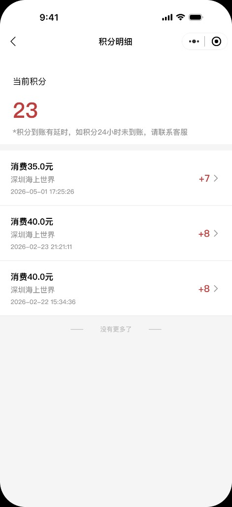
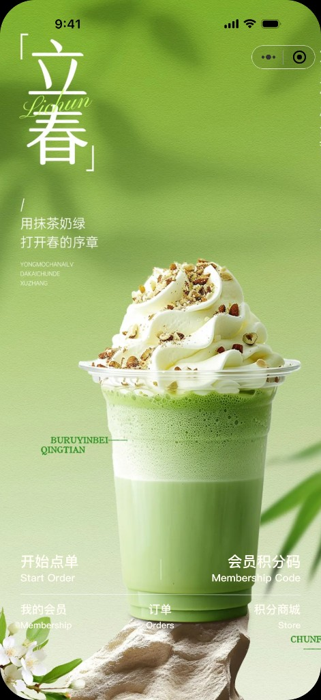
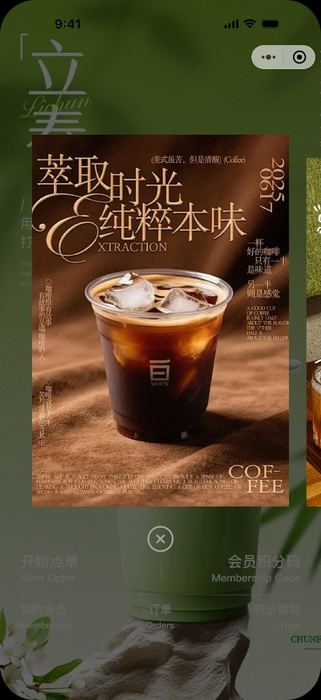
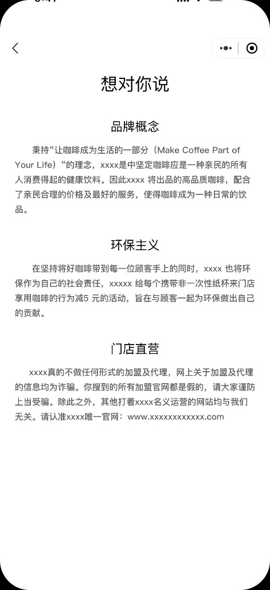

为一家精品咖啡品牌从 0 到 1 设计的微信小程序：覆盖「找门店 → 点单 → 取餐 → 复购」的完整链路， 并通过会员积分、节气营销与环保主张，把一次性的买咖啡，做成可持续的品牌关系。

客户是一家定位「让咖啡成为生活的一部分」的本地精品咖啡品牌，已有数家直营门店， 但线上点单依赖第三方平台，抽佣高、无法沉淀会员、品牌感被稀释。 他们希望拥有一个自有的点单入口，既能高效完成交易，又能讲好品牌故事、留住复购用户。
在「交易效率」和「品牌温度」之间找到平衡——既要让用户 30 秒下完单，又要让他们记住这个品牌。
咖啡是高频、即时的消费场景，用户常常在通勤路上下单。下单路径必须短、决策成本低、随时可改规格。
脱离第三方平台后，如何靠会员积分、优惠券和「再来一单」把一次性顾客变成回头客。
在功能型小程序里植入品牌主张（环保、节气文化），让用户感知到「这不只是一个点单工具」。
多家门店、不同营业时间与库存，用户需要快速选对最近、在营业的门店，避免下错单。
通过门店观察与 8 位常客访谈，提炼出两类核心用户，他们的诉求决定了设计的优先级。
把整条链路压缩为 4 步，每一步都尽量减少跳转与决策负担。
定位推荐最近 / 在营业门店，地图 + 列表双视图。
左侧分类锚点 + 右侧商品流，弹窗选规格直接加购。
购物车常驻底部，价格实时累计，一键结算。
取餐码醒目展示，「再来一单」促进复购。
一套围绕「咖啡红 + 自然色」展开的视觉语言，保证 30+ 页面的一致性与可扩展性。
品牌红用于价格、CTA 与选中态，强化「行动点」；抹茶绿承载节气与环保信息；米色与可可色营造温暖的咖啡气质。
中文使用苹方（PingFang SC），数字与英文搭配 SF Pro，保证价格、距离等信息清晰易读。
从浏览菜单到拿到取餐码，全程保持「价格可见、规格可改、随时回退」。





每消费 5 元积 1 分，积分可在积分商城兑换品牌周边（吸管杯、保温杯等），形成「喝得越多、越想留下」的正循环。




结合二十四节气推出限定视觉与饮品（如「立春 · 抹茶奶绿」），把品牌的文化感融入日常点单，制造期待与传播点。


做对了什么：把「点单效率」作为第一优先级，常驻购物车与规格弹窗大幅减少跳转；同时用一套设计规范让品牌、会员、交易三个系统视觉统一。
如果重来：会更早建立组件库与变量（Design Tokens），让节气换肤、门店主题色等扩展更低成本；也会补充更系统的可用性测试来验证下单转化。
收获：这是一次完整的 0→1 实战——从理解商业目标，到落地为可交付的界面与规范，让我对「设计如何服务业务」有了更具体的理解。